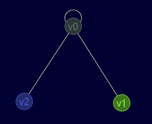
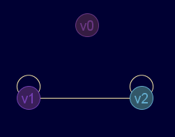
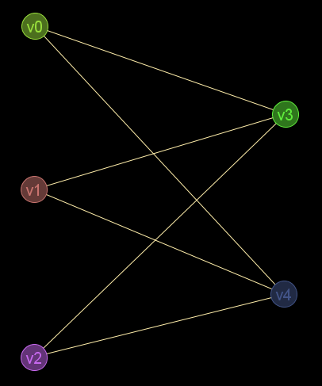
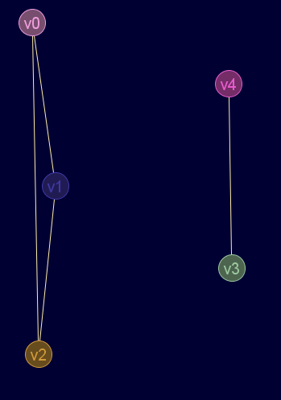
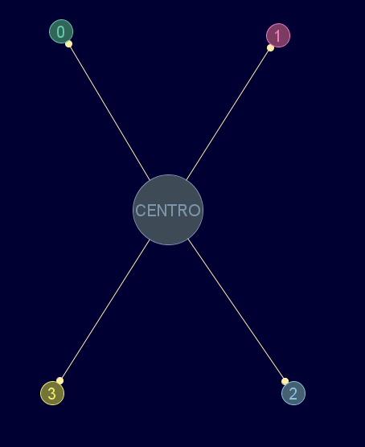
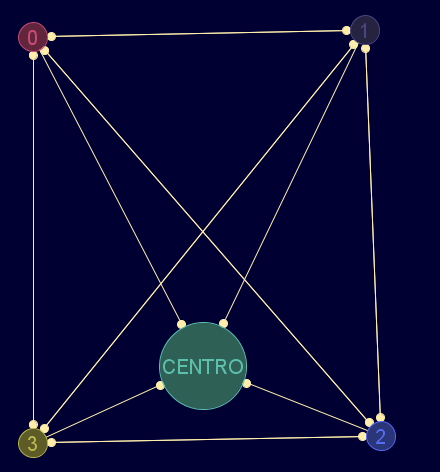

Descripción
Crea el grafo complemento de un grafo/digrafo/pseudografo (no válido para multigrafos o grafos ponderados)
Cadena de entrada
gr_complemento
Cadena de salida
GRAFO.complemento
Uso
gr_complemento(<grafo>)
Ejemplos
gr_complemento(gr_nuevo([[1,1,1],[1,0,0],[1,0,0]],false,false,true))
Grafo en JMEScriptGUI con visor de grafos v0.1:
 
gr_complemento(gr_nuevo([[0,0,0,1,1],[0,0,0,1,1],[0,0,0,1,1],[1,1,1,0,0],[1,1,1,0,0]],falso))
Grafo en JMEScriptGUI con visor de grafos v0.1:
 
gr_complemento(gr_nuevo([[0,1,1,1,1],[0,0,0,0,0],[0,0,0,0,0],[0,0,0,0,0],[0,0,0,0,0]],['CENTRO','0','1','2','3'],true))
Grafo en JMEScriptGUI con visor de grafos v0.1:
 
Desde / Última modificación
v0.6.2.0